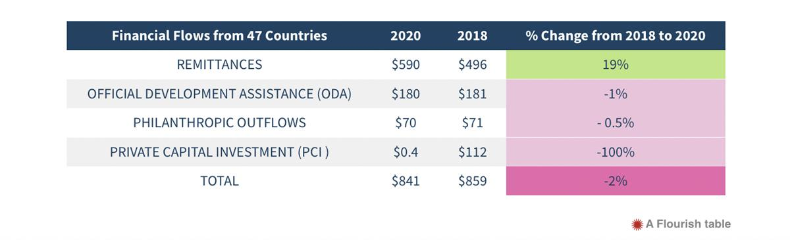
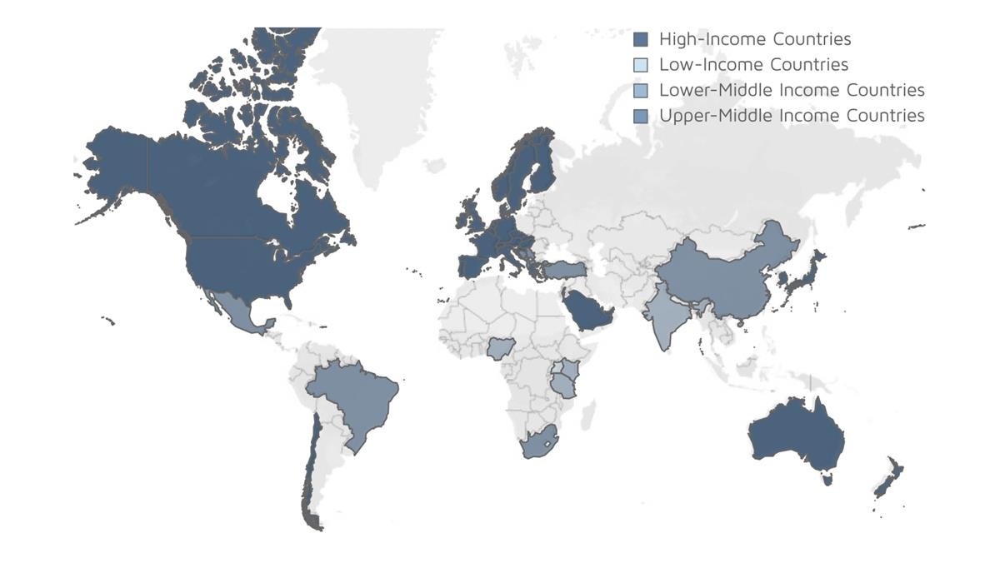

Cross-border philanthropy reached $70 billion in 2020 despite pandemic - report
By Sam Ursu 10 May 2023
Total cross-border philanthropy amounted to $70 billion in 2020 showing high resilience in a year when humankind was badly hit by the Covid-19 pandemic. The 11th edition of Global Philanthropy Tracker (GPT) released by Lilly Family School of Philanthropy at Indiana University-Purdue University Indianapolis (IUPUI) contains information from 47 countries, representing about 61% of the global population and 85% of global GDP.
Philanthropy stays resilient
The authors of the report pointed out that in 2020 cross-border philanthropic giving only fell by 0.05% compared to 2018. If taken on its own, the amount would be equivalent to the 73rd-largest economy on the planet. Furthermore, the $70 billion spent on cross-border philanthropic giving in 2020 represents 8% of total cross-border financial flows.
The report also compared cross-border philanthropic giving to other cross-border financial resource flows: official development assistance provided by governments, private capital investment coming from financial markets and remittances sent by individual migrants back home.
Fig.1. Total cross-border resources from 47 countries by flow, 2018 and 2020 (in billions of inflation-adjusted 2020 US dollars)

Source: Global Philanthropy Tracker (GPT) 2023
It proved that compared to 2018, capital investment was the least resilient, severely falling by 100%, whereas ODA decreased by 1% and philanthropy by 0.5%. Remittances were the only ones to increase by 19% in 2020. The authors of the report attributed this to their “counter-cyclical nature” in which a decrease in private capital flows in their home countries leads to an increase in remittances from migrants who choose to cut their own living costs in order to cushion the blow for family members suffering from an economic downturn in their home country.
“Cross-border philanthropic giving proved its resilience during the pandemic by adjusting to the new normal,” said Dr. Una Osili, Assistant Dean for Research and International Programs at the Lilly School of Philanthropy. “Here, we pay witness to the role that both philanthropy and remittances played in addressing the urgent needs and challenges of communities.”
Facts and figures
According to the 11th edition of the GPT, five of the lower-income countries tracked donated a total of $42 million in cross-border philanthropic giving in 2020 and 10 upper-middle-income countries contributed $644 million, with the 32 wealthiest countries studied contributing the lion’s share at $69.2 billion.
Fig.2. Cross-border philanthropic outflows from 47 countries, 2020

Source: Indiana University Lilly Family School of Philanthropy, 2023 Global Philanthropy Tracker
Of the total cross-border philanthropic giving in 2020, education and health were the top two most supportable charitable causes, many of which were directly aligned with the UN 2030 Sustainable Development Goals (SDGs) number three (education) and four (global health and well-being), although most countries did not provide details on how this giving fit into the SDG framework.
Spotlight on Ukraine
The 11th edition of the GPT also included a spotlight on cross-border philanthropic giving to war-stricken Ukraine. The report noted that Ukraine has always been well-situated to receive cross-border philanthropic giving since its laws are favorable to receiving such aid, including an exemption on cash donations being taxed as income and an exemption on in-kind donations from customs duties.
The Lilly Family School of Philanthropy examined cross-border philanthropic giving to Ukraine between February 24 and August 31, 2022, focusing on donations of $1 million or larger made by individuals, corporations, and charities. According to this report, there were 175 total donations of at least $1 million made during this period, for a total of $912.7 million, with companies providing 48% of this amount. Of these donations, cash was the most popular type, comprising 77% of the total giving during this period. Furthermore, three of the donations of $1 million or more were made via cryptocurrency.
Data collecting standards needed
The 11th edition of the GPT found that the $70 billion in cross-border philanthropic giving demonstrated an increased need to develop mechanisms to better support global philanthropy. The GPT recommends that countries adopt common standards for data tracking in order to better inform policymakers, strengthening the role of local philanthropic organizations, and adopting innovations such as crowdfunding and more global funds like the World Health Organization’s Covid-19 Solidarity Response Fund.
SOURCE: DEVELOPMENT AID